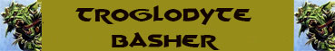
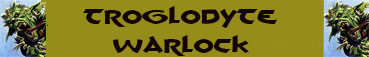

|
|
Ambiente/Habitat | Colline, Montagne e Sotterranei |
| Frequenza | Non Comune | |
| Organizzazione | Tribale | |
| Periodo di Attività | Qualsiasi | |
| Dieta | Carnivora | |
| Intelligenza | Low intelligence (6) | |
| Punti Combattimento | 5 Punti Combattimento | |
| Tesoro | Comune | |
| Allineamento Dominante | Caotico Malvagio | |
| Numero di Apparizione | 5-10 (1d4+1d3+3) | |
| Classe Armatura | 5 [10 base, 4 corazza, 1 destrezza] | |
| Movimento | 7 esagoni | |
| Dadi Vita | 2 (+ 4 punti ferita) | |
| Thac0 | Thac0 18 | |
| Numero di Attacchi | Arma | |
| Danni | Vedi sotto | |
| Poteri Offensivi |
Istinto Predatorio; Tossina del Troglodita; |
|
| Poteri Difensivi | Robustezza Superiore (+ 4 punti ferita); | |
| Poteri Generici | Mimetizzazione; | |
| Vulnerabilità | Nessuna | |
| Resistenza alla Magia | Nessuna | |
| Sensi | Vista Comune, Infravisione (18 metri), Sensi Superiori | |
| Dimensioni | Medium (1,70 m. di altezza) | |
| Morale | Steady (11) | |
| Valore in Punti Esperienza | 145 |
|
TIRI SALVEZZA DELLA CREATURA |
|||||||
| CORAGGIO | ENERGIA VITALE | MAGIA | MALATTIA | MENTE | RIFLESSI | ROBUSTEZZA | VELENO |
| 0 | 0 | 0 | 0 | -5% | 0 | 0 | +5% |
| 52 | 58 | 65 | 51 | 68 | 57 | 56 | 48 |
Descrizione
Questa creatura ha l'aspetto di un rettile dalla forma umanoide che misura circa un metro e settanta di altezza. Ha braccia sottili ma muscolose e cammina eretto sulle sue gambe tozze, trascinando una coda lunga e snella. La testa è simile a quella di una lucertola e sormontata da una cresta che sovrasta la fronte e la parte terminale del collo. Gli occhi sono lucenti di colore giallo con una pupilla nera a fessura verticale. Questa creatura pesa mediamente 75 kg.
Combat
I trogloditi
generalmente non usano corazze o scudi ed impugnano armi rudimentali che
riescono a produrre ed a riparare. Solitamente un troglodita è armato con una
mazza e porta con se dietro la schiena due giavellotti. Di solito queste
creature tirano almeno una scarica di giavellotti sui propri avversari prima di
avvicinarsi per combattere in corpo a corpo. Se la battaglia volge a loro
sfavore, i trogloditi non esitano a ritirarsi cercando di nascondersi a meno che
non difendano la loro tana per la quale, invece, combattono strenuamente.
N. 1 Mace: Iniziativa +5,
Danni 1d6 (Botta), Parata 1, Dimensioni Medium - 8 libbre, Materiale Metallo
N. 2 Stone Head Javelin: Iniziativa +4, Danni 1d4 (Punta), Parata 0,
Dimensioni Medium - 2 libbre, Materiale Legno
ISTINTO PREDATORIO (Moderate Special Ability): La creatura possiede un forte istinto predatorio, per tale motivo costei riceve un bonus costante di +1 ai suoi tiri per colpire.
TOSSINA DEL TROGLODITA (Moderate Special Ability): Questa creatura è in grado di emettere una tossina gassosa quando combatte con i propri nemici. Si tratta di un veleno gassoso che la creatura può diffondere naturalmente nelle posizioni adiacenti alla propria. La diffusione è automatica ed avviene alla fine di ogni round in cui la creatura è impegnata in un combattimento in corpo a corpo senza che sia necessaria alcuna attivazione. Alla fine di ogni round di combattimento, dunque, tutte le creature presenti in una qualsiasi posizione adiacente a quella occupata dalla creatura saranno soggette al seguente veleno gassoso: Tossina del Troglodita (Veleno Gassoso) Onset 1 round, Effetti 0/Incapacitato per 10 round, Delay nessuno, Tiro Salvezza 0, Assuefazione 24 ore.
ROBUSTEZZA SUPERIORE (Typical Ability): Il fisico di questa creatura è estremamente robusto conferendole una robustezza superiore che le garantisce 4 punti ferita supplementari.
MIMETIZZAZIONE [ZONE ROCCIOSE (COLLINE, MONTAGNE E SOTTERRANEI)] (Moderate Special Ability): Quando la creatura resta ferma è capace di mimetizzarsi nell'ambiente indicato. In particolare, fino a che resta ferma costei non potrà essere notata dalle creature che passino ad una distanza superiore a 30 metri ed otterrà una possibilità pari all'80% di non essere notata dalle creature che le passano ad una distanza inferiore. Utilizzare quest'abilità richiede un'azione complessa dalla durata dell'intero round e la creatura potrà risultare, quindi, nascosta solo alla fine del round. Per restare nascosta la creatura non potrà compiere altre azioni complesse e non potrà spostarsi (si faccia eccezioni per piccoli movimenti effettuati sul posto). Si noti che questa abilità non può essere utilizzata nei confronti di chi ha già visto la creatura fino a che questa non esce dalla sua linea visiva. Si noti che il tiro percentuale è effettuato segretamente dalla creatura un'unica volta ed il suo risultato sarà applicato a qualsiasi soggetto fino a che costei non si sposti od agisca diversamente. Il risultato di questo tiro si considererà incrementato di una penalità del +10% al fine di verificare se la creatura si è nascosta nei confronti di soggetti dotati di Sensi Superiori o che posseggano la competenza Observation ed abbiano superato una prova nella stessa (+15% nei confronti delle creature che abbiano entrambe le caratteristiche). Il risultato del tiro si considererà incrementato di un'ulteriore penalità del +25% al fine di verificare se la creatura si è nascosta nei confronti di soggetti dotati di infravisione (che sia attiva e sempre che la creatura si trovi all'interno del suo raggio). Qualora la creatura risulti nascosta con successo alla vista dei suoi avversari ed agisca improvvisamente costei imporrà loro una penalità di -3 alla relativa prova sulla sorpresa.
Habitat/Society
I trogloditi sono rettili umanoidi di indole malvagia. Hanno una predisposizione per la guerra e amano gustare il sapore dei loro nemici, specialmente se umanoidi. I trogloditi non sono particolarmente intelligenti ma la loro ferocia e l'astuzia naturale compensano ampiamente questa mancanza. Spesso intraprendono razzie sanguinarie contro insediamenti o assaltano carovane. Fanno la guardia alle loro tane con aggressività, attaccando chiunque si avvicini troppo. Le tribù dei trogloditi sono governate dai più grossi e feroci tra di essi, con dei capi minori che si sono distinti in battaglia. La religione è un elemento importante nella vita di una comunità. Presso ogni insediamento è presente un piccolo tempio e i ministri del culto sono personaggi importanti e rispettati nella società dei trogloditi. Nonostante siano creature particolarmente diffuse rappresentano un pericolo modesto in quando le tribù sono quasi sempre separatiste e lottano per il predominio del territorio l'una contro l'altra. Nei rari casi e per il tempo in cui un grande leader riesce a tenere unite e far cooperare varie tribù di queste creature il loro numero può divenire un elemento di pericolo anche per civiltà ben più avanzate.
Ecology
I trogloditi rappresentano una delle più antiche delle razze umanoidi intelligenti e le rovine che si trovano nelle loro dimore sotterranee testimoniano quanto in un epoca remota la loro razza fosse dominante. Ciò, prima dello svilupparsi delle altre civiltà umanoidi. Ai trogloditi piace stabilirsi vicino ad altri insediamenti minori per depredarne gli abitanti, il bestiame e le carovane. Le razzie hanno luogo spesso durante le ore notturne quando l'infravisione può dare a queste creature un notevole vantaggio. I trogloditi danno valore all'acciaio più che a ogni altro materiale. Anche se i singoli di solito non possiedono molte ricchezze, la tana di un villaggio di trogloditi può contenere oggetti di un certo valore sparpagliati. La tana di solito è una grossa caverna con anfratti minori per i piccoli e le uova. In una tana di solito ci sono piccoli in numero pari a un quinto degli adulti e uova pari ad un decimo. I trogloditi venerano Azatàr e più raramente le Forze della Natura.
Mystical Resource Sourge (Ghiandola della Tossina) Quantità: 1, Presenza 10% - Effetto Particolare: Veleno - Qualità della Risorsa: Common.

|
|
Ambiente/Habitat | Colline, Montagne e Sotterranei |
| Frequenza | Non Comune | |
| Organizzazione | Tribale | |
| Periodo di Attività | Qualsiasi | |
| Dieta | Carnivora | |
| Intelligenza | Low intelligence (7) | |
| Punti Combattimento | 13 Punti Combattimento | |
| Tesoro | Comune * 2 | |
| Allineamento Dominante | Caotico Malvagio | |
| Numero di Apparizione | 1/2 (10%/5% di presenza cumulativo ogni troglodita incontrato) | |
| Classe Armatura | 3 [10 base, 6 corazza, 1 destrezza] | |
| Movimento | 7 esagoni | |
| Dadi Vita | 4 (+ 12 punti ferita) | |
| Thac0 | Thac0 16 | |
| Numero di Attacchi | Arma | |
| Danni | Danno dell'arma, +3 forza | |
| Poteri Offensivi |
Istinto Predatorio; Esperienza Tattica; Tossina del Troglodita; |
|
| Poteri Difensivi |
Robustezza
Superiore
(+ 12 punti ferita); Deflessione Migliorata; |
|
| Poteri Generici | Mimetizzazione Superiore; | |
| Vulnerabilità | Nessuna | |
| Resistenza alla Magia | Nessuna | |
| Sensi | Vista Comune, Infravisione (18 metri), Sensi Superiori | |
| Dimensioni | Medium (1,70 m. di altezza) | |
| Morale | Elite (13) | |
| Valore in Punti Esperienza | 487 |
|
TIRI SALVEZZA DELLA CREATURA |
|||||||
| CORAGGIO | ENERGIA VITALE | MAGIA | MALATTIA | MENTE | RIFLESSI | ROBUSTEZZA | VELENO |
| 0 | 0 | 0 | 0 | -5% | 0 | +5% | +5% |
| 49 | 55 | 62 | 47 | 65 | 54 | 48 | 44 |
Descrizione
I trogloditi hanno sviluppato una casta di stregoni dotati di poteri superiori. Queste creature rivestono un ruolo privilegiato nelle comunità di trogloditi guidando in alcuni casi pattuglie o singoli gruppi degli stessi.
Combat
I trogloditi
picchiatori indossano corazze metalliche umanoidi (paragonabili ad una banded
mail) ed impugnano una grossa mazza a due mani.
N. 1 Great Mace: Iniziativa +8,
Danni 1d8+4 (Botta), Parata 1, Dimensioni
Large - 15 libbre, Materiale Metallo
ISTINTO PREDATORIO
(Moderate Special
Ability):
La creatura possiede un forte
istinto predatorio, per tale motivo costei riceve un
bonus costante di
+1
ai suoi tiri per colpire.
ESPERIENZA TATTICA (Lesser Special Ability): La creatura è particolarmente abile nel combattimento per questo motivo riceve permanentemente 6 punti combattimento supplementari.
TOSSINA DEL TROGLODITA (Moderate Special Ability): Questa creatura è in grado di emettere una tossina gassosa quando combatte con i propri nemici. Si tratta di un veleno gassoso che la creatura può diffondere naturalmente nelle posizioni adiacenti alla propria. La diffusione è automatica ed avviene alla fine di ogni round in cui la creatura è impegnata in un combattimento in corpo a corpo senza che sia necessaria alcuna attivazione. Alla fine di ogni round di combattimento, dunque, tutte le creature presenti in una qualsiasi posizione adiacente a quella occupata dalla creatura saranno soggette al seguente veleno gassoso: Tossina del Troglodita (Veleno Gassoso) Onset 1 round, Effetti 0/Incapacitato per 10 round, Delay nessuno, Tiro Salvezza 0, Assuefazione 24 ore.
ROBUSTEZZA SUPERIORE (Typical Ability): Il fisico di questa creatura è estremamente robusto conferendole una robustezza superiore che le garantisce 12 punti ferita supplementari.
DEFLESSIONE MIGLIORATA (Moderate Special Ability): La creatura è in grado di deflettere i colpi in arrivo con la propria arma. Una volta al round, infatti, la stessa potrà provare a deflettere un qualsiasi attacco ricevuto in corpo a corpo da una posizione frontale che non sia di dimensioni superiori a Large. La creatura ha una possibilità di deflettere i colpi che va da 1 a 5 su 1d20. Questo tiro va effettuato prima del tiro per colpire effettuato dall'avversario. Se l'avversario effettua un 20 naturale sull'attacco che la creatura era riuscita a deflettere lo stesso andrà comunque a segno ma senza conseguenze critiche. Al tiro andranno applicate le penalità previste al tiro per colpire in situazioni di combattimento particolari (come ad esempio incapacitato). La creatura non potrà provare a deflettere in alcun caso attacchi a distanza.
MIMETIZZAZIONE SUPERIORE [ZONE ROCCIOSE (COLLINE, MONTAGNE E SOTTERRANEI)] (Moderate Special Ability): Quando la creatura resta ferma è capace di mimetizzarsi nell'ambiente indicato. In particolare, questa creatura ha una possibilità pari al 85% di non essere notata dalle creature che le passano vicine. Utilizzare quest'abilità richiede un'azione complessa dalla durata dell'intero round e la creatura potrà risultare, quindi, nascosta solo alla fine del round. Per restare nascosto la creatura non potrà compiere altre azioni complesse e non potrà spostarsi (si faccia eccezioni per piccoli movimenti effettuati sul posto). Si noti che questa abilità non può essere utilizzata nei confronti di chi ha già visto la creatura fino a che questa non esce dalla sua linea visiva. Il risultato di questo tiro si considererà incrementato di una penalità del +10% al fine di verificare se la creatura si è nascosta nei confronti di soggetti dotati di Sensi Superiori o che posseggano la competenza Observation ed abbiano superato una prova nella stessa (+15% nei confronti delle creature che abbiano entrambe le caratteristiche). Il risultato del tiro si considererà incrementato di un'ulteriore penalità del +25% al fine di verificare se la creatura si è nascosta nei confronti di soggetti dotati di infravisione (che sia attiva e sempre che la creatura si trovi all'interno del suo raggio). Qualora questa creatura si sia nascosta con successo alla vista dei suoi avversari ed agisca improvvisamente costei imporrà loro una penalità di -3 alla relativa prova sulla sorpresa.

|
|
Ambiente/Habitat | Colline, Montagne e Sotterranei |
| Frequenza | Non Comune | |
| Organizzazione | Tribale | |
| Periodo di Attività | Qualsiasi | |
| Dieta | Carnivora | |
| Intelligenza | Average intelligence (10) | |
| Punti Combattimento | 9 Punti Combattimento | |
| Tesoro | Comune * 2 | |
| Allineamento Dominante | Caotico Malvagio | |
| Numero di Apparizione | 1 (5% di presenza cumulativo ogni troglodita incontrato) | |
| Classe Armatura | 4 [10 base, 4 corazza, 2 destrezza] | |
| Movimento | 7 esagoni | |
| Dadi Vita | 4 (+ 8 punti ferita) | |
| Thac0 | Thac0 16 | |
| Numero di Attacchi | Arma | |
| Danni | Danno dell'arma, +2 (energia negativa) | |
| Poteri Offensivi |
Istinto Predatorio; Tossina del Troglodita; Capacità Magiche; |
|
| Poteri Difensivi | Robustezza Superiore (+ 8 punti ferita); | |
| Poteri Generici | Mimetizzazione Superiore; | |
| Vulnerabilità | Nessuna | |
| Resistenza alla Magia | Nessuna | |
| Sensi | Vista Comune, Infravisione (18 metri), Sensi Superiori | |
| Dimensioni | Medium (1,70 m. di altezza) | |
| Morale | Elite (13) | |
| Valore in Punti Esperienza | 384 |
|
TIRI SALVEZZA DELLA CREATURA |
|||||||
| CORAGGIO | ENERGIA VITALE | MAGIA | MALATTIA | MENTE | RIFLESSI | ROBUSTEZZA | VELENO |
| 0 | 0 | 0 | 0 | +5% | 0 | 0 | +5% |
| 49 | 55 | 62 | 47 | 55 | 54 | 53 | 44 |
Descrizione
I trogloditi hanno sviluppato una casta di stregoni dotati di poteri superiori. Queste creature rivestono un ruolo privilegiato nelle comunità di trogloditi guidando in alcuni casi pattuglie o singoli gruppi degli stessi.
Combat
I trogloditi
stregoni generalmente non usano corazze o scudi ed impugnano una mazza d'osso
creata con il teschio di creature umanoidi. Costoro riescono a infondere
costantemente nell'arma energia negativa in grado di provocare due danni
supplementari ad ogni colpo andato a segno in corpo a corpo.
N. 1 Mace: Iniziativa +5,
Danni 1d6 (Botta) +2
(energia negativa), Parata 1, Dimensioni Medium - 8 libbre, Materiale Metallo
ISTINTO PREDATORIO
(Moderate Special
Ability):
La creatura possiede un forte
istinto predatorio, per tale motivo costei riceve un
bonus costante di
+1
ai suoi tiri per colpire.
TOSSINA DEL TROGLODITA (Moderate Special Ability): Questa creatura è in grado di emettere una tossina gassosa quando combatte con i propri nemici. Si tratta di un veleno gassoso che la creatura può diffondere naturalmente nelle posizioni adiacenti alla propria. La diffusione è automatica ed avviene alla fine di ogni round in cui la creatura è impegnata in un combattimento in corpo a corpo senza che sia necessaria alcuna attivazione. Alla fine di ogni round di combattimento, dunque, tutte le creature presenti in una qualsiasi posizione adiacente a quella occupata dalla creatura saranno soggette al seguente veleno gassoso: Tossina del Troglodita (Veleno Gassoso) Onset 1 round, Effetti 0/Incapacitato per 10 round, Delay nessuno, Tiro Salvezza 0, Assuefazione 24 ore.
CAPACITA' MAGICHE (Typical Ability): I trogloditi sciamani possono lanciare alcune volte al giorno i seguenti incantesimi, tutti gli incantesimi utilizzati da queste creature si considerano lanciati al 5° livello di lancio:
Streams of Fire (Evocation) - 3 volte al giorno
Range: 15
metri
Components: V, S
Duration: Instantaneous
Casting
Time: 3
Area of Effect: One creature
Saving Throw: ½
Quando il mago lancia questo incantesimo un fascio di fiamme vorticose parte dalle sue mani e colpisce la creatura selezionata entro il raggio d'azione della magia (9 metri al 1° livello, 12 metri al 2° e 3° livello, 15 metri al 4° e 5° livello, e così via) fino ad un massimo di 18 metri a partire dal 6° livello. La vittima subirà, dunque, danni da fuoco magici pari ad 1d3 danni ogni due livelli di lancio + 1 danno per livello di lancio (1d3+1 danni al 1° livello di lancio, 1d3+2 danni al 2° livello di lancio, 2d3+3 danni al 3° livello di lancio, 2d3+4 danni al 4° livello di lancio, 3d3+5 danni al 5° livello di lancio, 3d3+6 danni al 6° livello di lancio) fino ad un massimo di 4d3+7 danni al 7° livello di lancio. La vittima ha diritto a superare un tiro salvezza su riflessi per dimezzare i danni subiti.
Stinking Cloud (Evocation) - 1 volte al giorno
Range: 30 metri
Components: V, S, M
Duration: 5 round
Casting Time: 3
Area of Effect: Sfera di 9 metri di diametro
Saving Throw: Speciale
Quando il mago lancia questo incantesimo, una nuvola di nauseabondi vapori gialli e verdastri appare in una sfera di 9 metri di diametro. Il mago può posizionare il centro della nube fino a 30 metri di distanza dallo stesso. Qualsiasi creatura presente nell'area o che vi entri (anche semplicemente passando) deve effettuare un tiro salvezza contro veleno per non restare intossicata. Le creature che sbagliano il tiro salvezza resteranno intossicate e non potranno fare altro che tossire. In particolare, ogni round, tossiranno in luogo di compiere una qualsiasi altra azione complessa. Queste creature potranno, però, effettuare azioni di mezzo movimento ed altre free action e non subiranno alcuna penalità al combattimento. Chi ha fallito il tiro salvezza continuerà a tossire fino a che resterà all'interno della nube ed in ogni caso continuerà a tossire per 1d4+1 rounds dopo averla abbandonata (o dopo che è svanita). Coloro che superano il tiro salvezza, invece, non subiranno gli effetti dell'intossicazione ma dovranno superare un nuovo tiro salvezza qualora alla fine di ogni round si trovino ancora all'interno della nube. Gli effetti tossici di questa magia devono essere considerati a tutti gli effetti come un veleno. In caso di presenza di vento moderato la durata dei vapori tossici sarà dimezzata (per eccesso), laddove del vento forte, invece, spazzerà via i vapori alla fine del round in corso. Il componente materiale di questo incantesimo è un uovo marcio che si consuma al lancio della magia.
ROBUSTEZZA SUPERIORE (Typical Ability): Il fisico di questa creatura è estremamente robusto conferendole una robustezza superiore che le garantisce 8 punti ferita supplementari.
MIMETIZZAZIONE SUPERIORE [ZONE ROCCIOSE (COLLINE, MONTAGNE E SOTTERRANEI)] (Moderate Special Ability): Quando la creatura resta ferma è capace di mimetizzarsi nell'ambiente indicato. In particolare, questa creatura ha una possibilità pari al 85% di non essere notata dalle creature che le passano vicine. Utilizzare quest'abilità richiede un'azione complessa dalla durata dell'intero round e la creatura potrà risultare, quindi, nascosta solo alla fine del round. Per restare nascosto la creatura non potrà compiere altre azioni complesse e non potrà spostarsi (si faccia eccezione per piccoli movimenti effettuati sul posto). Si noti che questa abilità non può essere utilizzata nei confronti di chi ha già visto la creatura fino a che questa non esce dalla sua linea visiva. Il risultato di questo tiro si considererà incrementato di una penalità del +10% al fine di verificare se la creatura si è nascosta nei confronti di soggetti dotati di Sensi Superiori o che posseggano la competenza Observation ed abbiano superato una prova nella stessa (+15% nei confronti delle creature che abbiano entrambe le caratteristiche). Il risultato del tiro si considererà incrementato di un'ulteriore penalità del +25% al fine di verificare se la creatura si è nascosta nei confronti di soggetti dotati di infravisione (che sia attiva e sempre che la creatura si trovi all'interno del suo raggio). Qualora questa creatura si sia nascosta con successo alla vista dei suoi avversari ed agisca improvvisamente costei imporrà loro una penalità di -3 alla relativa prova sulla sorpresa.
INSEDIAMENTO DI TROGLODITI DI PICCOLE DIMENSIONI
Un piccolo insediamento di trogloditi può contare mediamente intorno a 5 gruppi di trogloditi (per ognuno del quale verificare la presenza di Basher e Warlock).
Per determinare
la religione alla quale l'insediamento è votato si tiri
[1d10]:
1-7
Azatàr,
8-10
Forze della Natura.
All'interno di un piccolo insediamento vi è sempre un luogo di culto. Per il
culto di Azatàr
vi è sempre un Nido del Teschio
gestito da un Custode delle Fiamme. Per determinare il livello del chierico si
tiri [1d12]:
1-7
5° livello di esperienza, 8-10
6° livello di esperienza, 11-12
7° livello di esperienza.
Per determinare
la presenza di trogloditi appartenenti ad una classe di personaggio (oltre al
capo del culto locale) si consulti la seguente tabella:
75%
- 65%
- 55%
- 45%
- 35%
Per stabilire il livello dei personaggi si tiri
[1d10]:
1-7
Personaggio di livello basso, 8-10
Personaggio di livello medio-basso.
Personaggio di livello basso [1d12]
:
1-7
1° livello di esperienza, 8-10
2° livello di esperienza, 11-12
3° livello di esperienza.
Personaggio di livello medio-basso
[1d12] :
1-7
4° livello di esperienza, 8-10
5° livello di esperienza, 11-12
6° livello di esperienza.
Per determinare
la classe dei personaggi si tiri:
[1d12]:
1-5
Combattenti, 6-9
Sacerdoti, 10-12
Vagabondi.
Combattenti [1d12]:
1-7
Fighter, 8-10
Berserker, 11-12
Adoratore del Sangue (solo se culto di Azatàr altrimenti ripetere).
Sacerdoti [1d12]:
1-8
Cleric, 10-12
Blood Priest.
Vagabondi [1d12]:
1-7
Thief, 8-12
Brigand.
Per determinare
la presenza di lucertole giganti (lizard giant) utilizzate come animali da
guardia o cavalcature si consulti la seguente tabella:
50%
- 33%
- 25%
Tesoro delle Comunità
Oltre al tesoro individuale, gli insediamenti di trogloditi possiedono solitamente un tesoro collettivo come indicato nelle seguenti tabelle:
Tesoro di un insediamento piccolo (* 2 per insediamento medio, * 3 insediamento grande)
| Tipologia di Tesoro | 1 Dado Vita | Quantità |
| Gemme |
25% + 25% |
3d3+1 |
| Oggetti Preziosi | 22% + 22% + 22% | 1d3 |
| Oggetti Comuni | 50% + 50% | 1d4 |
| Armi | 35% + 35% | 1d4+1 |
| Armature | 30% + 30% | 1d3 |
| Oggetto Magico | 30% + 25% + 20%+ 15% | 1 oggetto magico 1d10: (1-8) common (9-10) rare |
| Monete di platino | 25% | 1d10 * 15 monete di platino |
| Monete d'oro | 50% + 33% +25% | 1d12+3 * 100 monete d'oro |
| Monete d'argento | 50% + 33% +25% | 1d12+3 * 150 monete di argento |
| Monete di rame | 50% + 33% +25% | 1d12+3 * 200 monete di rame |